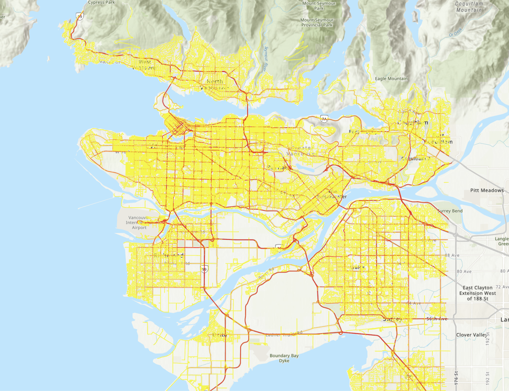
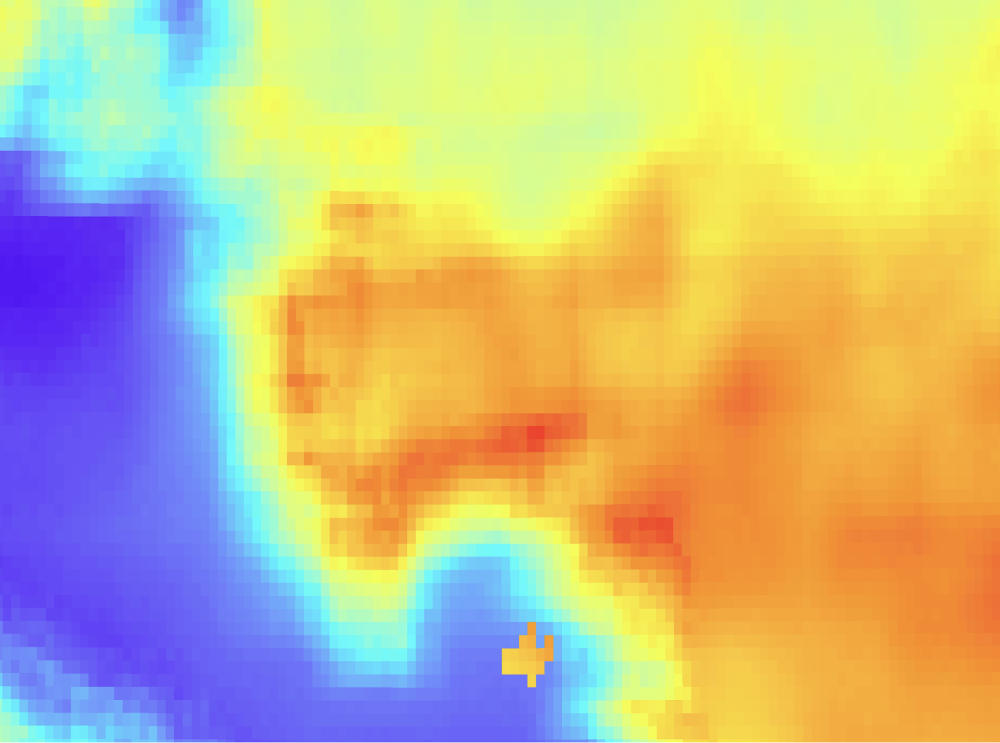
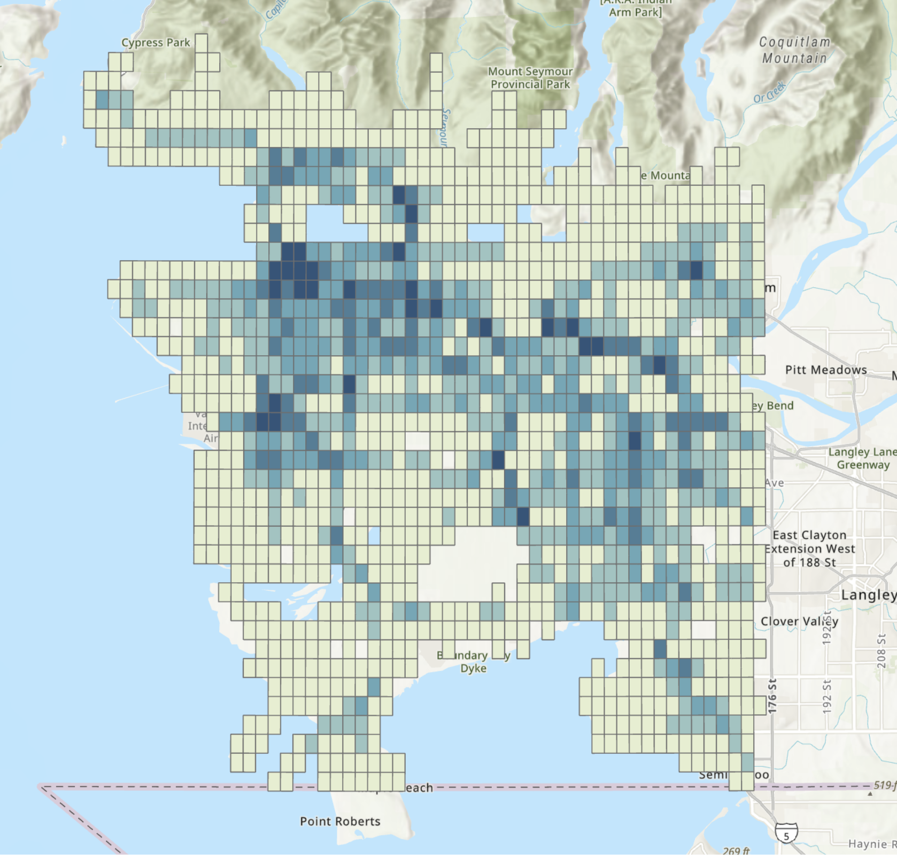
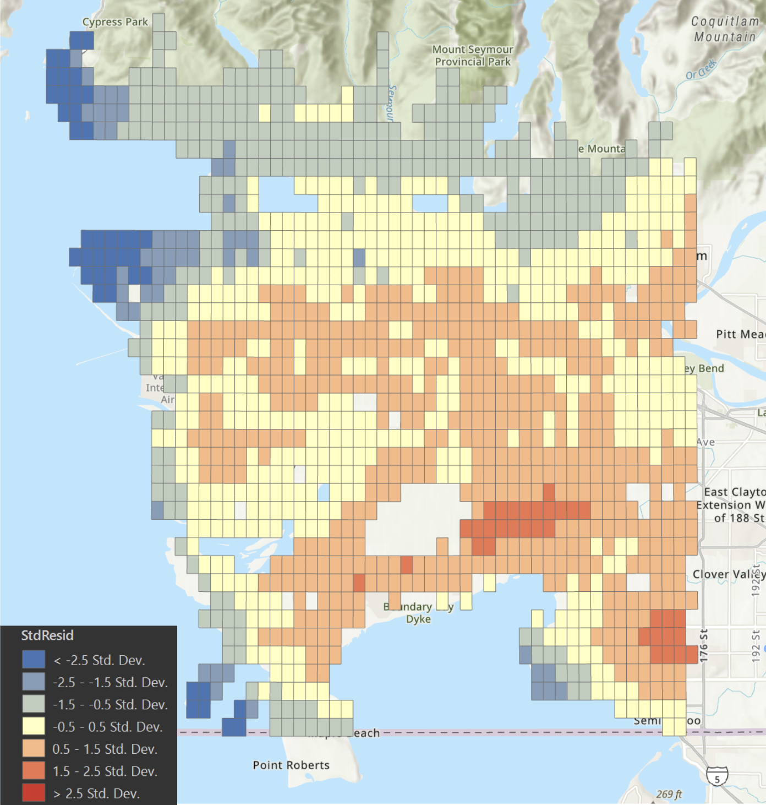
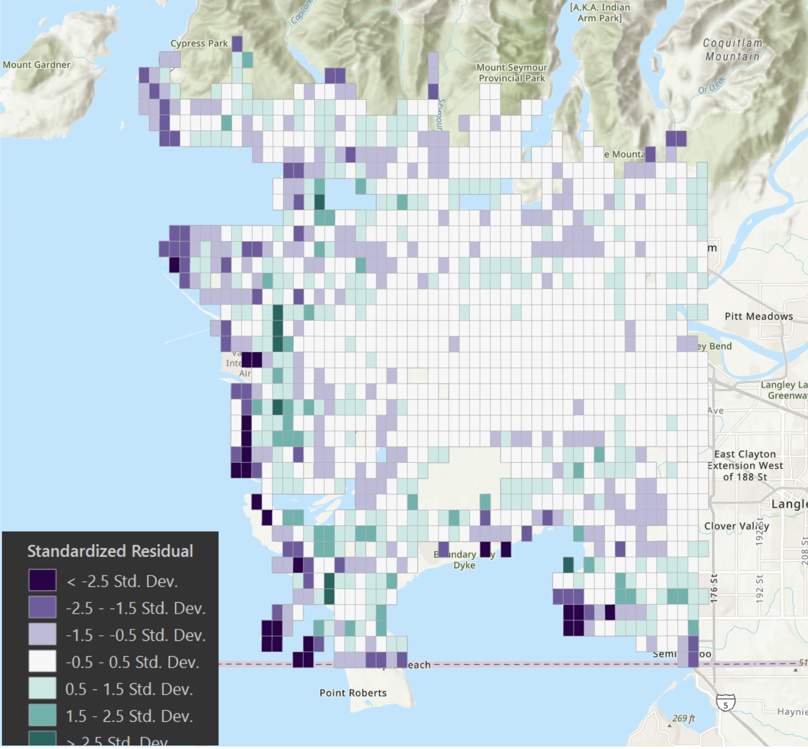
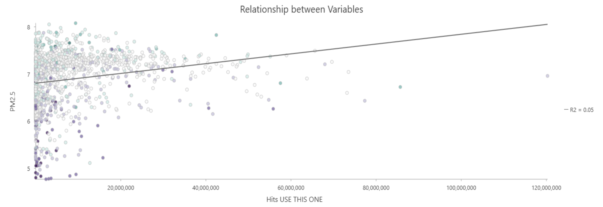

Standardize Spatial Data
All spatial inputs are projected, clipped, and aligned to a shared 1 km analysis grid. This creates a consistent unit of comparison so each dataset can be summarized using the same spatial boundaries.
GIS Final Project • Metro Vancouver
An ArcGIS Pro analysis of whether elevated transportation intensity is spatially associated with higher PM2.5 concentrations across Metro Vancouver.
1. Home
This project examines whether higher transportation intensity is spatially associated with elevated PM2.5 concentrations across Metro Vancouver. Because the available air-quality dataset is provided as a 1 km raster, the analysis is conducted at a neighbourhood-scale rather than at the street level. ArcGIS Pro is used to align all spatial inputs to a common 1 km grid, construct a weighted road length proxy based on road classifications, and compare transportation intensity with PM2.5 values using a consistent spatial framework.
The website presents a clear project narrative from research framing through methodology, results, and discussion. Figures are formatted for the final draft and can be updated or swapped easily.
2. Introduction
Air quality is a central urban environmental issue because it influences respiratory health, cardiovascular risk, and overall quality of life. Fine particulate matter, especially PM2.5, is often used as a key indicator because of its ability to remain suspended in the air and penetrate deeply into the lungs. Understanding how this pollutant is distributed across a metropolitan region can support more informed environmental planning and public health analysis.
Transportation systems are an important contributor to urban pollution through vehicle emissions, roadway activity, and the concentration of movement within densely connected corridors. Metro Vancouver is a meaningful study area because it combines a large regional road network, diverse land uses, and strong variation in urban intensity across municipalities. GIS-based spatial analysis is well suited to this question because it allows environmental and infrastructure datasets to be standardized, compared, and interpreted within the same geographic framework.
3. Project Objective
Is transportation intensity spatially associated with higher PM2.5 concentrations across Metro Vancouver at the 1 km scale?
4. Methodology
All spatial inputs are projected, clipped, and aligned to a shared 1 km analysis grid. This creates a consistent unit of comparison so each dataset can be summarized using the same spatial boundaries.
Road classes are assigned relative weights and aggregated as total weighted road length per grid cell. This produces a proxy variable intended to represent transportation intensity across the region.
PM2.5 concentrations from the 1 km raster are extracted or summarized for each cell in the analysis grid, allowing direct comparison with the transportation proxy.
Map-based interpretation is combined with statistics to evaluate whether cells with higher transportation intensity also tend to show higher PM2.5 values.
Workflow placeholder. Replace with an exported ArcGIS model, custom diagram, or a more detailed methods visual later.

5. Results





The OLS model indicates a weak global relationship between transportation intensity and PM2.5 concentrations across Metro Vancouver (Adjusted R² = 0.044). OLS residuals showed extreme spatial autocorrelation (Moran’s I = 0.95, z = 45.19, p < 0.001), indicating non-stationarity and a violation of the independence assumption.
In contrast, GWR substantially improved model fit (Adjusted R² = 0.962), supporting a highly spatially variable relationship. The optimal bandwidth (Golden Search) was very small (~30 neighbours), suggesting PM2.5 varies at a highly local spatial scale. The improvement primarily reflects GWR’s ability to capture spatial structure in the PM2.5 surface rather than a dramatic increase in the explanatory power of traffic intensity alone.
GWR also reduced, but did not eliminate, residual spatial autocorrelation (Moran’s I = 0.556, z = 26.51, p < 0.001). This indicates substantial unexplained spatial structure remains, likely driven by additional processes beyond traffic intensity (regional background pollution, meteorology, and topography). These results confirm non-stationarity (consistent with the Koenker/BP test) and justify spatially varying coefficient models.
6. Discussion
Areas with more intense transportation infrastructure tend to experience greater exposure to traffic-related air pollution. This relationship should be interpreted cautiously because PM2.5 concentrations can reflect industrial activity, regional atmospheric conditions, and broader land-use patterns.
A major limitation of the project is the use of 1 km air-quality data. This resolution is appropriate for neighbourhood-scale comparison but may smooth out finer variations near major roads or intersections. In addition, weighted road length is only a proxy for transportation intensity and does not directly capture traffic counts, congestion, fleet composition, or temporal variation.
The analysis is also shaped by geographic scale and the modifiable areal unit problem (MAUP). Results may differ if alternate grid sizes or zoning schemes are used. Future improvements could include finer-resolution pollution surfaces, observed traffic volume data, time-specific transportation measures, or multivariate models that account for land use and population density.